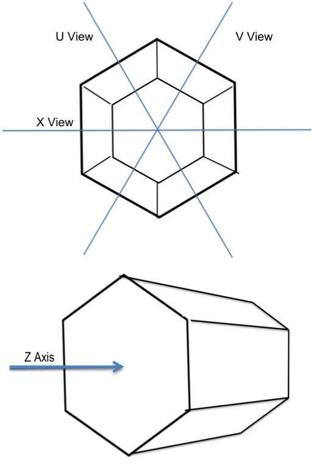

Welcome to Arachne Live, the MINERνA web event display.
MINERνA
MINERvA is a neutrino scattering experiment which uses the NuMI beamline at Fermilab. The NuMI beamline is a very intense beam of the elementary particles called neutrinos. The MINERvA detector is located in an underground chamber in the path of the beamline. We can't detect neutrinos directly but when a neutrino interacts with a particle in the detector we can detect the products of that interaction. MINERvA studies these neutrino interactions in support of neutrino oscillation experiments. Live allows you to view the latest data as it is collected by the detector.
The Detector
The diagrams at the right shows three directions the detector is viewed from with the z axis pointing out of the detector. The detector is made of overlapping layers of scintillator, a plastic which absorbs the energy of particles and reemits it in the form of a flash of light. The light deposited in the scintillator is carried through fiberoptic cables to photomultiplier tubes which detect the small flashes of light.
The detector has three sections: a pure scintillator section, the ECAL, and the HCAL. The ECAL has layers of lead in the scintillator while the HCAL has layers of steel in the scintillator. How particles behave in these parts of the detector helps to identify them. They also stop the particles.
The Hit Maps display in Arachne shows the event from the X, U, and V views of the detector. The towers surrounding the inner detector are called the veto. The small rectangles are called hits, the color of a hit is determined by its energy. The green line is called a track, tracks are made by a particle travailing through the detractor.
The 3D Display shows only the tracks in a three dimensional view of the detector. The blue hexagons represent the front and back of the MINERvA detector and the black shape represents the front of the MINOS detector located behind MINERvA.
Current range:
Time
When you view an entry (also called a gate) in Arachne you see all the events that occurred in the detector during one pulse of the beam. A slice is a piece of time in that entry that shows the event(s) that happened in that smaller time period. Think of the entry as a long exposure picture and the slice as a shorter exposure. You can use the previous slice, next slice, and all hits buttons to navigate through the entry and you current slice will be highlighted in the time histogram.
Current PE range:
Energy
The PH Histogram displays the number of hit of a given energy. The energy is automatically shown in MeV (megaelectronvolts), a very useful unit of energy for particle physics. Another common unit is PE (potoelectrons), not to be confused with potential energy. You can remove lower energy hits from the hit maps display by clicking and dragging the histogram to the left.

Created by Molly J. Clairemont at Otterbein University
Send comments to Molly at molly.clairemont@otterbein.edu
Graphic Design by Erin Cochran.